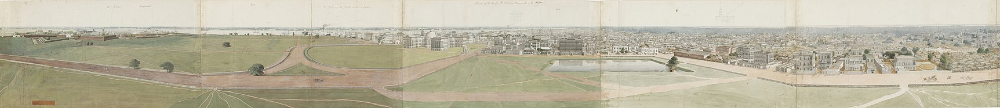

From Wikipedia, the free encyclopedia
For other uses, see Kolkata (disambiguation).
"Calcutta" redirects here. For other uses, see Calcutta (disambiguation).
Kolkata (UK: /kɒlˈkɑːtə/[11] or /kɒlˈkʌtə/,[12] US: /koʊlˈkɑːtɑː/,[13] Bengali: [kolˈkata] (listen); also
known
as Calcutta /kælˈkʌtə/[12][13] which was the official name until 2001) is the capital and largest city of
the
Indian state of West Bengal. It is on the eastern bank of the Hooghly River 80 km (50 mi) west of the border
with Bangladesh. It is the primary business, commercial, and financial hub of Eastern India and the main port of
communication for North-East India.[14] According to the 2011 Indian census, Kolkata is the seventh-most
populous city in India, with a population of 45 lakh (4.5 million) residents within the city. It is a part of
Kolkata Metropolitan Area (or known as Greater Kolkata) which has a population of over 1.41 crore (14.1 million)
residents making it the third-most populous metropolitan area in India. In 2021, the Kolkata metropolitan area
crossed 1.5 crore (15 million) registered voters. The Port of Kolkata is India's oldest operating port and its
sole major riverine port. Kolkata is regarded as the cultural capital of India. Kolkata is the second largest
Bengali-speaking city after Dhaka. It has the highest number of nobel laureates among all cities in
India.[1][15]
In the late 17th century, the three villages that predated Calcutta were ruled by the Nawab of Bengal under
Mughal suzerainty. After the Nawab granted the East India Company a trading licence in 1690,[16] the area was
developed by the Company into an increasingly fortified trading post known as Fort William. Nawab Siraj
ud-Daulah occupied Calcutta in 1756, and the East India Company retook it the following year. In 1793 the East
India Company was strong enough to abolish native rule, and assumed full sovereignty of the region. Under
company rule and later under the British Raj, Calcutta served as the capital of British-held territories in
India until 1911. In that year, after assessing its geographical location, combined with growing nationalism in
Bengal (Calcutta became the centre for the Indian independence movement), the British moved the capital to the
relatively more centrally located New Delhi.
Following independence in 1947, Kolkata, which was once the premier centre of Indian commerce, culture, and
politics, suffered many decades of political violence and economic stagnation before it rebounded.[17] The city
was also flooded with Hindu refugees from East Bengal (present-day Bangladesh) in the decades following the 1947
partition of India, transforming its landscape and shaping its politics.[18][19] A demographically diverse
global city, the culture of Kolkata features idiosyncrasies that include distinctively close-knit neighbourhoods
(paras) and freestyle conversations (adda). Kolkata is home to eastern India's film industry, known as
Tollywood, and cultural institutions, such as the Academy of Fine Arts, the Victoria Memorial, the Asiatic
Society, the Indian Museum, and the National Library of India. Among scientific institutions, Kolkata hosts the
Agri Horticultural Society of India, the Geological Survey of India, the Botanical Survey of India, the Calcutta
Mathematical Society, the Indian Science Congress Association, the Zoological Survey of India, the Institution
of Engineers, the Anthropological Survey of India and the Indian Public Health Association. Four Nobel laureates
and two Nobel Memorial Prize winners are associated with the city.[20] Though home to major cricketing venues
and franchises, Kolkata stands out in India for being the country's centre of association football and also
having strong culture in other sports less widespread elsewhere. Hence, Kolkata is also known as 'the city of
joy'.[21]
Etymology
Main article: Etymology of Kolkata
The word Kolkata (Bengali: কলকাতা [kolˈkata]) derives from Kôlikata (Bengali: কলিকাতা [ˈkɔliˌkata]), the Bengali
language name of one of three villages that predated the arrival of the British, the other two villages were
Sutanuti and Govindapur.[22]
There are several explanations for the etymology of this name:
- Kolikata is thought to be a variation of Kalikkhetrô (Bengali: কালীক্ষেত্র [ˈkaliˌkʰetrɔ]), meaning "Field
of [the goddess] Kali". Similarly, it can be a variation of 'Kalikshetra' (Sanskrit: कालीक्षेत्र, lit. "area
of Goddess Kali").
-
Another theory is that the name derives from Kalighat.[23]
-
Alternatively, the name may have been derived from the Bengali term kilkila (Bengali: কিলকিলা), or "flat
area".[24]
-
The name may have its origin in the words khal (Bengali: খাল [ˈkʰal]) meaning "canal", followed by kaṭa
(Bengali: কাটা [ˈkaʈa]), which may mean "dug".[25]
-
According to another theory, the area specialised in the production of quicklime or koli chun (Bengali: কলি
চুন [ˈkɔliˌtʃun]) and coir or kata (Bengali: কাতা [ˈkata]); hence, it was called Kolikata).[24]
Although the city's name has always been pronounced Kolkata or Kôlikata in Bengali, the anglicised form Calcutta
was the official name until 2001, when it was changed to Kolkata in order to match Bengali pronunciation.[26]
History
Main article: History of Kolkata
British colonial rule
The discovery and archaeological study of Chandraketugarh, 35 km (22 mi) north of Kolkata, provide evidence that
the region in which the city stands has been inhabited for over two millennia.[27][28] Kolkata's recorded
history began in 1690 with the arrival of the English East India Company, which was consolidating its trade
business in Bengal. Job Charnock, an administrator who worked for the company, was formerly credited as the
founder of the city;[29] In response to a public petition,[30] the Calcutta High Court ruled in 2003 that the
city does not have a founder.[31] The area occupied by the present-day city encompassed three villages:
Kalikata, Gobindapur and Sutanuti. Kalikata was a fishing village; Sutanuti was a riverside weavers' village.
They were part of an estate belonging to the Mughal emperor; the jagirdari (a land grant bestowed by a king on
his noblemen) taxation rights to the villages were held by the Sabarna Roy Choudhury family of landowners, or
zamindars. These rights were transferred to the East India Company in 1698.[32]: 1
In 1712, the British completed the construction of Fort William, located on the east bank of the Hooghly River
to protect their trading factory.[33] Facing frequent skirmishes with French forces, the British began to
upgrade their fortifications in 1756. The Nawab of Bengal, Siraj ud-Daulah, condemned the militarisation and tax
evasion by the company. His warning went unheeded, and the Nawab attacked; he captured Fort William which led to
the killings of several East India company officials in the Black Hole of Calcutta.[34] A force of Company
soldiers (sepoys) and British troops led by Robert Clive recaptured the city the following year.[34] Per the
1765 Treaty of Allahabad following the battle of Buxar, East India company was appointed imperial tax collector
of the Mughal emperor in the province of Bengal, Bihar and Orissa, while Mughal-appointed Nawabs continued to
rule the province.[35] Declared a presidency city, Calcutta became the headquarters of the East India Company by
1773.[36]
In 1793, ruling power of the Nawabs were abolished and East India company took complete control of the city and
the province. In the early 19th century, the marshes surrounding the city were drained; the government area was
laid out along the banks of the Hooghly River. Richard Wellesley, Governor-General of the Presidency of Fort
William between 1797 and 1805, was largely responsible for the development of the city and its public
architecture.[37] Throughout the late 18th and 19th century, the city was a centre of the East India Company's
opium trade.[38] A census in 1837 records the population of the city proper as 229,700, of which the British
residents made up only 3,138.[39] The same source says another 177,000 resided in the suburbs and neighbouring
villages, making the entire population of greater Calcutta 406,700.
In 1864, a typhoon struck the city and killed about 60,000 in Kolkata.[40]

Panoramic view of Kolkata (Calcutta) from the Shaheed Minar (Octerlony Monument), 1832, drawn by Jacob
Janssen
 Central District
Central District